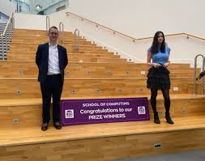

>
>
Welcome to The School of Computing
Our courses are designed in partnership with industry, and are taught by staff whose expertise is right at the leading edge of many specialisms in this field.
Working with state-of-the-art facilities, we aim to ensure students are excited and challenged, and that they gain the creative skills required to become the innovators of the future.
The School has been recognised as the best computer science department of any new UK University in the Good University Guide 2009

School of Computing Staff
Our staff have a breadth of experience in teaching and professional practice, most staff also have research expertise in their subject area.
Information Technology with Business Intelligent
The MSc Information Technology with Business Intelligence degree provides an opportunity for candidates wishing to formalise their existing IT experience with a qualification, and for graduates of non-computing disciplines to develop the specialist skills suitable to transition into an exciting career in computing, with a specialism in business intelligence.